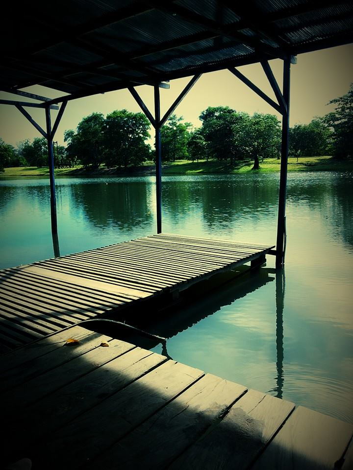
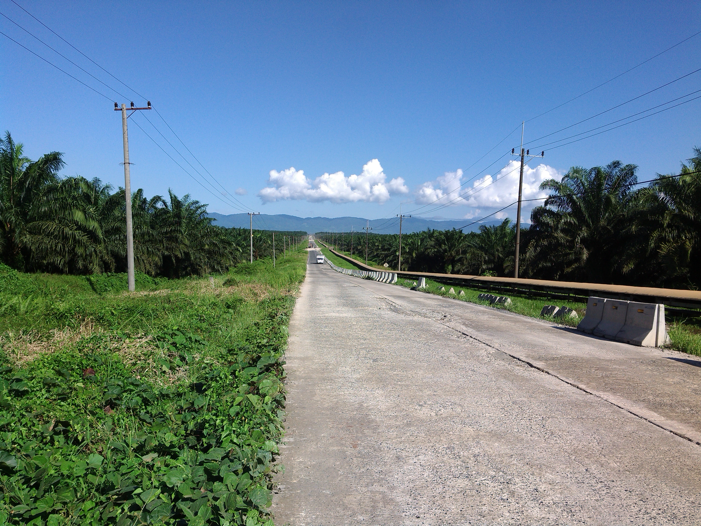
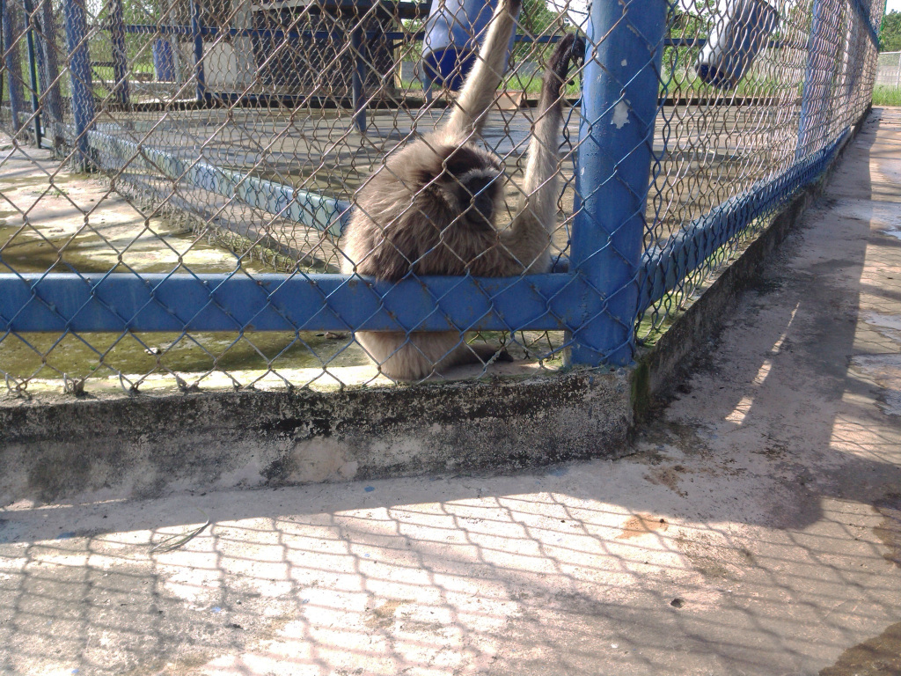
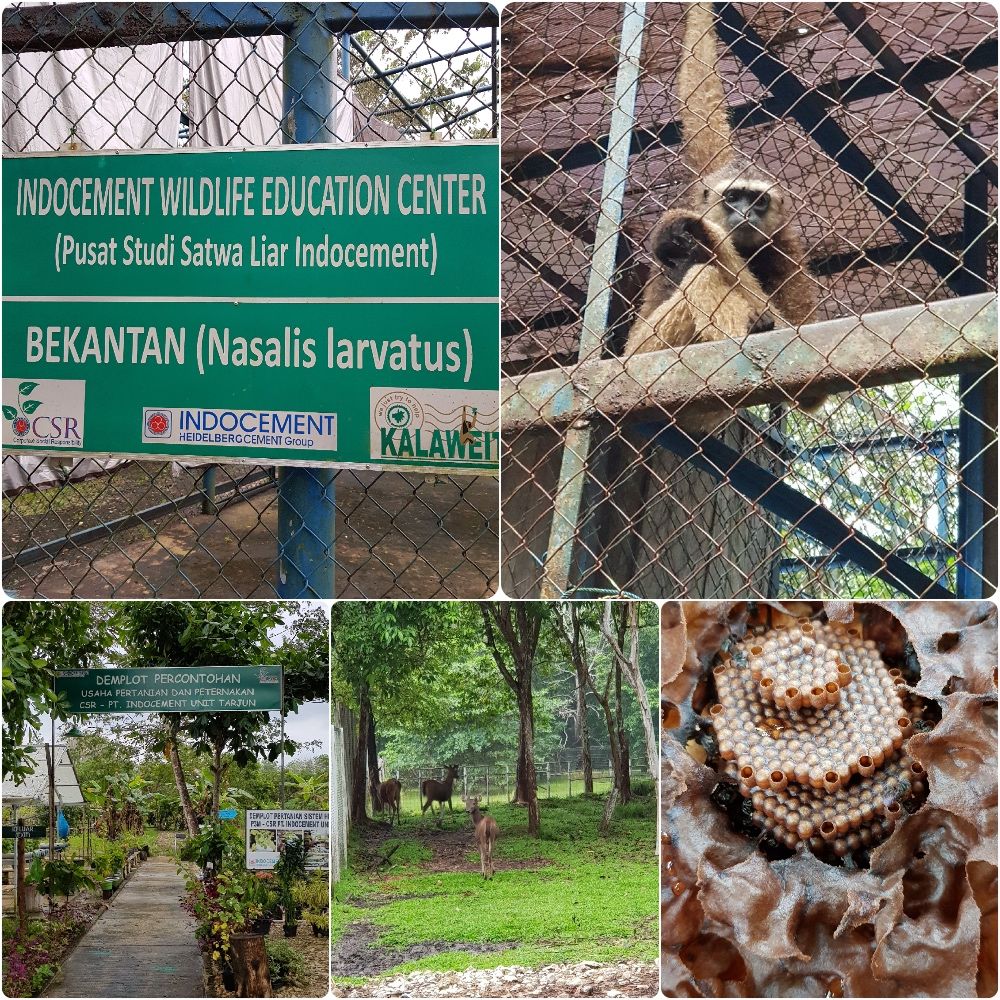
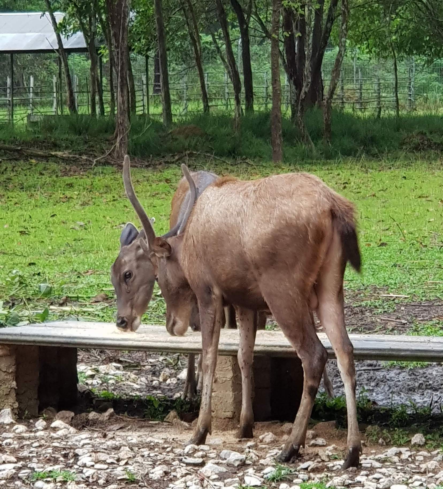

A PLACE TO CALL HOME
DANAU BUATAN YANG TERLETAK DI HOUSING
tempat ini dulu adalah tempat untuk bermain sepeda air yang lama tidak digunakan lagi, dengan air danau yang terlihat sangat jernih sehingga kita bisa melihat ikan ikan kecil sedang berenang. Sebenarnya danau buatan ini bukanlah tempat wisata publik karena danau buatan ini teradapat di dalam lingkungan perumahan (Housing dan Guest House) karyawan PT. Indocement Tunggal Prakarsa dan dikelola oleh perusaan tersebut, hanya orang-orang perumahan, penduduk desa setempat dan orang-orang yang berkepentingan dengan PT.Indocement saja yang bisa menikmati sejuknya danau ini, namun jika anda benar-benar ingin mengunjungi maka anda dapat meminta izin pada satpam perumahan untuk berwisata di danau. Ukuran danau ini tidak begitu besar namun dikelilingi oleh pohon-pohon rindang dan terdapat taman bermain di samping danau.
MESIN CONVEYOR YANG SANGAT PANJANG.
tapi sebelum masuk ke desa tersebut kita harus melewati mesin conveyor yang dimiliki oleh PT INDOCEMENT. mungkin yang asing bagi anda disana terdapat Mesin Conveyor dengan panjang 26 kilometer yang membentang dari perusahaan Indocement di desa Tarjun hingga Cantung, wowww..panjang juga ya, menurut salah satu karyawan Indocement dulunya mesin conveyor ini menjadi mesin terpanjang yang se-asia tenggara . Mesin ini dibuat memanjang membelah perkebunan sawit untuk mengangkut material dasar pembuatan semen seperti gambar ini nih....
TEMPAT PENANGKARAN SATWA LANGKA.
tidak jauh diluar Housing ada sebuah Penangkaran Bekantan (Pusat Study Satwa Liar Indocement), bekantan adalah primata langka asli borneo yang menjadi maskot Kalimantan Selatan, didalam penangkaran terdapat pula owa-owa, kukang dan rusa. .
 Selain Bekantan yang merupakan icon dari Kalimantan Selatan, Rusa Sambar adalah satwa yang dievakuasi serta dirawat melalui program perbaikan gizi dan dikembangbiakan di IWEC. Jika kondisi hewan sudah membaik dan sehat nantinya akan dilepas kembali ke habitatnya untuk mencegah kepunahan.
Selain itu berbagai studi hayati serta kampanye pelestarian lingkungan juga dilakukan secara terus menerus. Indocement pabrik Tarjun juga bekerja sama dengan berbagai pihak , seperti Ecologist dari Heidelberg Technology Centre, dan Studi Keberagaman Burung oleh Fakultas Kehutanan Universitas Lambung Mangkurat Banjarmasin. Kerja sama ini bertujuan untuk melestarikan lingkungan serta menjaga keaneragaman hayati di areal izin tambang (quarry) maupun wilayah sekitarnya.